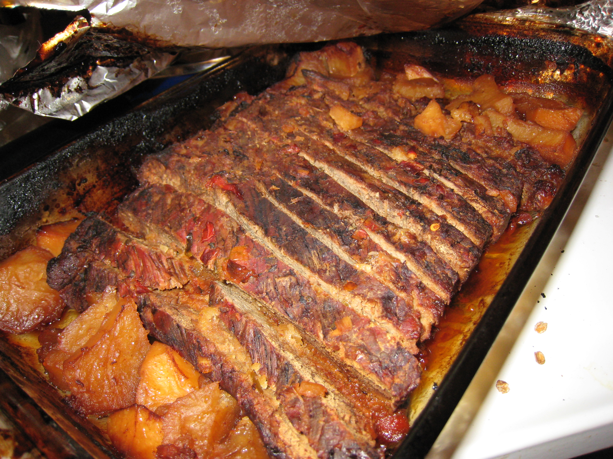
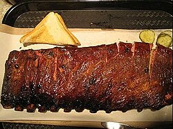
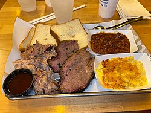
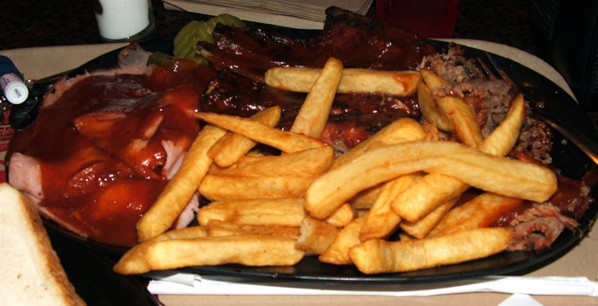
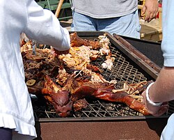
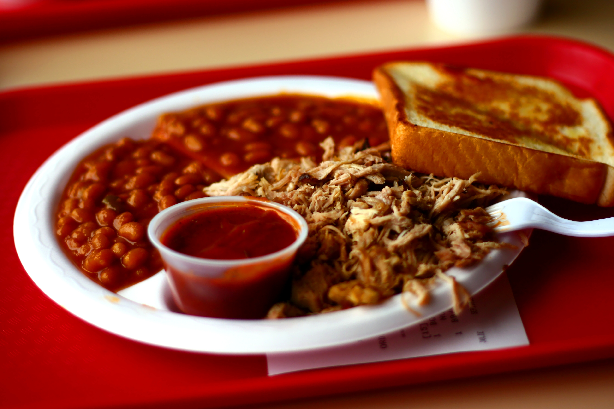

American BBQ
Low and slow — the four great American BBQ regions and the art of smoke
Texas BBQ — Beef is king
Texas BBQ is about beef — specifically brisket — cooked over post oak wood with nothing but salt and pepper. It's the purist tradition: no sauce, no shortcuts, just time, smoke, and heat. Central Texas defined modern American BBQ culture.
Central Texas
The Lockhart school — Kreuz Market, Smitty's, Black's BBQ — uses the simplest technique: coarse salt and cracked black pepper rub, post oak fire, offset smoker at 250°F for 12–18 hours. The brisket bark (crust) is nearly black, the interior pink with a smoke ring, the fat fully rendered to silk. Sauce is an insult.
- Brisket (full packer, 14–18 lbs) is the centerpiece
- Beef ribs — dinosaur-sized short ribs smoked 8+ hours
- Sausage links (all-beef, German immigrant influence)
- Served on butcher paper, sides: pickles, white bread, raw onion
East Texas
East Texas style cooks lower and longer — meat almost falls off the bone. Tomato-based BBQ sauce (sweeter, thinner) is served alongside or mopped on during cooking. African American pit master traditions are central to this style. Pork is more common than in Central Texas.
- Pulled pork shoulders cooked until completely tender
- Chopped beef sandwiches with sweet tomato sauce
- Links with more pork content than Central Texas sausages
- Sides: potato salad, coleslaw, pinto beans
South Texas / Barbacoa
South Texas BBQ draws on Mexican and Tejano traditions. Barbacoa (beef cheeks, tongue, and head meat) cooked wrapped in maguey or banana leaves underground. Mesquite wood gives an intensely smoky, slightly bitter flavor. Weekend-only at most spots — cooked overnight.
- Beef cheek (cachete) — meltingly tender after 12 hours
- Lengua (tongue) — clean flavor, silky texture
- Served with fresh corn tortillas and salsa roja
- Cabrito (young goat) roasted whole over mesquite
Carolina BBQ — Whole Hog Tradition
The Carolinas claim the oldest continuous BBQ tradition in America — rooted in Native American and West African cooking techniques that predate the colonies. The debate between Eastern and Western Carolina is passionate and ongoing.
Eastern North Carolina
The purest form: entire hog cooked over hardwood coals for 8–12 hours, pulled, chopped, and dressed with nothing but apple cider vinegar and red pepper flakes. No tomato — ever. The Skylight Inn in Ayden has been doing this since 1947. The sauce IS the essence: acidic, spicy, cuts through the rich pork fat perfectly.
- Whole hog (200–250 lbs) split and cooked skin-up
- 100% wood coals — no gas, no electric, no shortcuts
- Vinegar sauce: cider vinegar, crushed red pepper, salt
- Coleslaw with vinegar dressing served on the sandwich
Western NC / Lexington Style
Lexington, NC uses pork shoulder (not whole hog) and introduces a small amount of ketchup to the vinegar sauce — creating the "Lexington Dip." More than 100 BBQ joints in a town of 20,000. The tomato content is minimal but sufficient to start wars with Eastern purists.
- Boston butt (pork shoulder) cooked over hickory coals
- Lexington Dip: cider vinegar + ketchup + sugar + pepper
- Red slaw (coleslaw dressed with the Lexington Dip)
- Bark and outside brown mixed into the pulled pork
South Carolina — Mustard Belt
South Carolina has four distinct sauce regions in one state, but the golden mustard sauce (yellow mustard, vinegar, sugar, pepper) is uniquely South Carolinian — a legacy of German immigrant settlers in the Midlands. Maurice's BBQ is the most famous purveyor. Whole hog cooking remains the tradition.
- Golden mustard sauce — tangy, bright, unlike anything in other states
- Whole hog pits, often with direct wood heat
- Hash and rice — a side dish specific to SC (pork organ stew served over rice)
- Coast areas also feature vinegar and light tomato sauces
Kansas City BBQ — Ribs, Burnt Ends & Thick Sauce
Kansas City sits at the center of the American BBQ universe — it draws from every surrounding tradition while creating its own. The thick, sweet, tomato-molasses sauce that most Americans picture when they think "BBQ sauce" is a Kansas City invention.
Kansas City Style
KC BBQ is democratic — it does everything. Ribs (beef and pork), brisket, pulled pork, chicken, turkey, sausage. The unifying element is hickory smoke and the thick, sweet, tomato-based sauce applied at the end of cooking. The city has over 100 BBQ restaurants — more per capita than anywhere in America.
Kansas City Sauce Profile
Base of tomato (ketchup or tomato sauce), molasses or brown sugar, apple cider vinegar, Worcestershire, onion powder, garlic, paprika, black pepper. Thick enough to coat a spoon. Applied in layers during the last 30–60 minutes of smoking to caramelize. This is the sauce that shaped American BBQ culture globally.
Memphis BBQ — Pork Ribs & Dry Rub Mastery
Memphis is pork country, and ribs are the religion. The pivotal Memphis question is dry vs. wet — and both traditions are fiercely defended. Memphis-style has influenced Nashville, St. Louis, and most of the mid-South BBQ scene.
Dry Ribs
A complex dry rub is applied generously to pork ribs — paprika, garlic powder, onion powder, celery salt, black pepper, cayenne, brown sugar — then the ribs are smoked over hickory or charcoal for 4–5 hours with no mopping, no basting, no sauce. The surface becomes a thick, crackling, spiced crust. Charlie Vergos' Rendezvous made this style famous.
- Charlie Vergos' Rendezvous — the temple of dry ribs since 1948
- Ribs finished directly over charcoal (not offset) — distinctive char
- Dry rub with heavy paprika, garlic, and celery salt
- Sauce served on the side — never applied
Wet Ribs
The same ribs, but mopped with a thin, tangy, vinegar-based sauce during smoking, then given a final glaze of thicker sauce at the end. Results in caramelized, lacquered ribs that glisten. The debate between dry and wet is the Memphis BBQ defining argument.
Pulled Pork Sandwiches
Memphis-style pulled pork is cooked until the shoulder completely surrenders. Chopped (not pulled) into a mix of meat and bark. Piled high on a bun with tangy coleslaw directly on top of the pork — the slaw's acid and crunch cut the richness perfectly. A thin, tangy sauce is drizzled over.
Woods & Smoke — The hidden ingredient
The wood defines the smoke, and the smoke defines the meat. Different woods impart different flavors, burn at different temperatures, and suit different proteins. Wood selection is one of the most consequential choices a pit master makes.
Rubs & Sauces
Cuts — Anatomy of BBQ
Gallery — BBQ in Smoke & Fire





